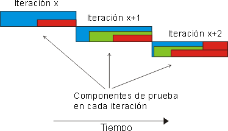
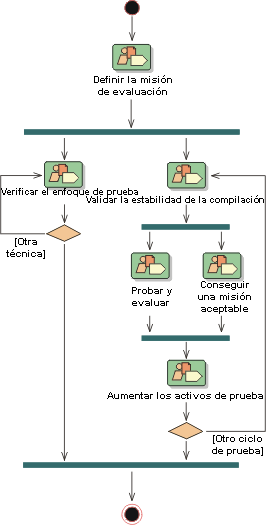
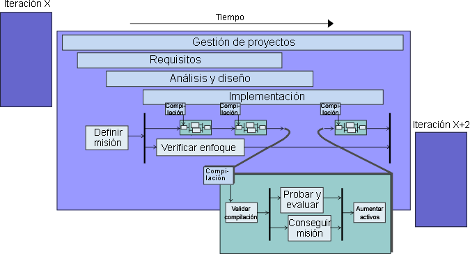

|
El software se perfecciona mediante iteraciones en el ciclo vital de desarrollo de software de RUP. El ciclo vital de
las pruebas saca provecho de una propuesta repetitiva equivalente de este entorno del proceso. En cada iteración, el
equipo de desarrollo de software produce una o varias compilaciones, todas son candidatas potenciales para realizar
pruebas.
El centro y los objetivos del equipo de desarrollo varían de una iteración a otra. Por lo tanto, los miembros del
equipo de pruebas deben estructurar el esfuerzo de prueba en consecuencia. Le sugerimos que mantenga la cantidad
abierta, la planificación y el diseño de la prueba al mínimo y, cuando sea necesario hacerlo, que intente realizar este
trabajo lo más cerca posible del momento en que se utilizará. También es recomendable que no aborde este desarrollo de
prueba abierta y detallada hasta que se haya producido una iteración.
Las adiciones, perfeccionamientos y supresiones se realizan en las pruebas que se implementan y ejecutan para cada
compilación. Algunas de estas pruebas se retienen y se acumulan en un cuerpo de pruebas, que se utilizan para las
posteriores compilaciones de pruebas de regresión utilizadas en los ciclos de prueba futuros. Esta propuesta revisa las
pruebas del proceso, de la misma manera que se revisa el software. No hay especificaciones de software congeladas ni
pruebas congeladas. La siguiente figura ilustra cómo evolucionan las pruebas a lo largo del tiempo.

Esta propuesta repetitiva, combinada con la utilización de las arquitecturas de componentes, le obliga a tener en
cuenta las pruebas para regresiones de calidad del producto en las compilaciones posteriores. Cualquiera de las pruebas
desarrolladas en la iteración X son candidatas potenciales para la prueba de regresión en la iteración X+1, la
iteración X+2, etc. Cuando es probable que una misma prueba se repita varias veces, vale la pena tener en cuenta la
automatización de la prueba. La automatización de pruebas proporciona un enfoque a la prueba repetida de casos de
ejemplo de utilización que evita que el personal de pruebas tenga que explorar la prueba en áreas funcionales nuevas.
Observe el ciclo vital de la prueba sin considerar el resto del proyecto. La figura siguiente muestra el desglose de
los detalles de trabajo para la disciplina de prueba en una iteración dada.

Este ciclo vital se alinea con el ciclo de iteración que sigue el resto del equipo de desarrollo. La iteración empieza
con una investigación del equipo de prueba, que negocia con el gestor de proyectos y otros interesados el trabajo de
prueba más útil que se debe llevar a cabo en la siguiente iteración. La mayoría de los miembros del equipo de prueba
contribuyen a este esfuerzo de trabajo.
Normalmente, cada iteración contiene un mínimo de un ciclo de prueba, como se muestra en la figura siguiente. Es
bastante habitual que se produzcan varias compilaciones para cada iteración y que se alinee un ciclo de prueba con cada
compilación. Sin embargo, en algunos casos, no se comprueban las compilaciones específicas.
Con el esfuerzo de prueba principal en proceso, es posible que un subconjunto de los miembros del equipo investigue
nuevas técnicas de prueba. Este esfuerzo pretende probar que las técnicas son fiables y el equipo puede basarse en
ellas, sobre todo en iteraciones posteriores.

El ciclo vital de la prueba forma parte del ciclo vital del software, por lo que deberían iniciarse en un marco
temporal equivalente. El proceso de desarrollo y diseño de las pruebas puede ser tan complejo y arduo como el proceso
de desarrollo del mismo producto de software. Si las pruebas no se inician al mismo tiempo que los primeros releases
ejecutables de software, el esfuerzo de prueba retrasará el descubrimiento de demasiados problemas hasta muy avanzado
el ciclo de desarrollo. Esto suele resultar en un periodo largo de arreglo de errores añadido al final de la
planificación de desarrollo, lo que anula los objetivos y elimina las ventajas del desarrollo repetitivo.
A pesar de que, si la tarea de definición y planificación de tareas se empieza pronto, pueden aparecer errores o
defectos importantes al principio del trabajo de especificación, es recomendable que escoja cuidadosamente el trabajo
de prueba que realiza por adelantado. Además del potencial de revisión mencionado, el equipo de pruebas debe tener
cuidado para mantener su rol de asesores de calidad imparciales, y no desbaratar los primeros requisitos y tareas de
diseño actuando como "policía de calidad". Dada su naturaleza, los primeros intentos del equipo del proyecto de
comprender el problema y los espacios de soluciones fracasarán. Al realizar demandas irracionales sobre la calidad de
este primer trabajo, se corre el riesgo de distanciar al equipo de prueba del resto del grupo de desarrollo.
Los problemas que se encontraron durante una iteración se pueden resolver en la misma iteración o se pueden posponer
hasta la siguiente, esta decisión depende del rol del gestor de proyectos. Una de las principales tareas del equipo de
pruebas y los gestores de proyectos es medir la completitud de la iteración mediante la verificación de que se
satisfacen sus objetivos, tal como se esbozan en el plan de iteración. De una iteración a otra, existe un
"descubrimiento de requisitos" continuo. Es necesario que conozca esta característica y esté preparado para
gestionarla.
El modo de realización de pruebas depende de varios factores:
-
el dominio de la aplicación
-
el presupuesto
-
la política de su empresa
-
la tolerancia al riesgo
-
el personal
La cantidad invertida en las pruebas depende de cómo evalúe la calidad y tolere el riesgo en su entorno particular.
|